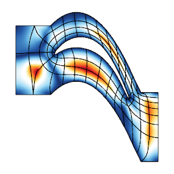

Meshing
This page provides a brief description of MFEM's mesh formats, meshing mini applications, and related tools.
Mesh formats
MFEM supports a number of mesh formats, including:
- MFEM's mesh v1.0 format for straight meshes,
- MFEM's mesh v1.0 format for arbitrary high-order curvilinear and more general meshes,
- MFEM's mesh v1.1 format, which adds support for non-conforming (AMR) meshes,
- MFEM's mesh v1.2 format, which adds support for parallel meshes,
- MFEM's format for NURBS meshes,
- The VTK unstructured mesh format, for triangular, quadrilateral, tetrahedral and hexahedral meshes,
- The Gmsh ASCII and binary formats for 2D and 3D meshes.
- The CUBIT meshes through the Genesis (NetCDF) binary format.
- The NETGEN triangular and tetrahedral mesh formats,
- The TrueGrid hexahedral mesh format.
Detailed description of these formats can be found on the mesh formats page. These formats are also supported by MFEM's native visualization tool, GLVis.
Meshing miniapps
The miniapps/meshing directory contains a collection of meshing-related miniapps based on MFEM.
Compared to the example codes, the miniapps are more complex, demonstrating more advanced usage of the library. They are intended to be more representative of MFEM-based application codes. We recommend that new users start with the example codes before moving to the miniapps.
The current meshing miniapps are described below. Related tools are listed at the bottom of the page.
Mobius Strip
This miniapp generates various Mobius strip-like surface meshes. It is a good way to generate complex surface meshes.

Manipulating the mesh topology and
performing mesh transformation are demonstrated. The mobius-strip mesh in the
data directory was generated with this miniapp.
Klein Bottle
This miniapp generates three types of Klein bottle surfaces. It is similar to the mobius-strip miniapp.

The klein-bottle and klein-donut meshes in the
data directory were generated with this miniapp.
Toroid
This miniapp generates two types of toroidal volume meshes; one with triangular cross sections and one with square cross sections.

A wide variety of toroidal meshes can be generated by varying the
amount of twist as well as the major and minor radii and other
variables. The toroid-wedge and toroid-hex meshes in the data directory
were generated with this miniapp.
Twist
This miniapp generates simple periodic meshes made from different types of elements.

A wide variety of twisted meshes can be generated by varying the amount of twist as well as the dimensions, element types, and other variables.
Extruder
This miniapp creates higher dimensional meshes from lower dimensional meshes by extrusion.

Simple coordinate transformations can also be applied if desired. The initial mesh can be 1D or 2D. 1D meshes can be extruded in the y-direction first and then in the z-direction. 2D meshes can be triangular, quadrilateral, or contain both element types.
Shaper
This miniapp performs multiple levels of adaptive mesh refinement to resolve the interfaces between different "materials" in the mesh, as specified by a given material() function.

It can be used as a simple initial mesh generator, for example in the case when the interface is too complex to describe without local refinement. Both conforming and non-conforming refinements are supported.
Mesh Explorer
This miniapp is a handy tool to examine, visualize and manipulate a given mesh.

Some of its features are:
- visualizing of mesh materials and individual mesh elements
- mesh scaling, randomization, and general transformation
- manipulation of the mesh curvature
- the ability to simulate parallel partitioning
- quantitative and visual reports of mesh quality
Mesh Optimizer
This miniapp performs mesh optimization using the Target-Matrix Optimization Paradigm (TMOP) by P.Knupp et al., and a global variational minimization approach.

It minimizes the quantity $\sum_T \int_T \mu(J(x))$, where $T$ are the target (ideal) elements, $J$ is the Jacobian of the transformation from the target to the physical element, and $\mu$ is the mesh quality metric.
This metric can measure shape, size or alignment of the region around each quadrature point. The combination of targets and quality metrics is used to optimize the physical node positions, i.e., they must be as close as possible to the shape / size / alignment of their targets.
Minimal Surface
This miniapp solves Plateau's nonlinear elliptic problem: the Dirichlet problem for the minimal surface equation.

The weak form of the equation, with prescribed boundary conditions, is given by:
$$\int_\Omega\frac{\nabla{u}\cdot\nabla{v}}{\sqrt{1+|\nabla{u}|^2}}dx = 0$$
Two problems can be run:
-
Problem 0 solves the minimal surface equation of parametric surfaces. The command line options allow the selection of different parametrization:
- Catenoid,
- Helicoid,
- Enneper,
- Hold,
- Costa,
- Shell,
- Scherk
or simply one from an input mesh file.
-
Problem 1 solves the minimal surface equation for surfaces restricted to be graphs of the form $z=f(x,y)$. This problem is solved using the Picard iterations: $$\int_\Omega\frac{\nabla{u_{n+1}}\cdot\nabla{v}}{\sqrt{1+|\nabla{u_n}|^2}}dx = 0$$